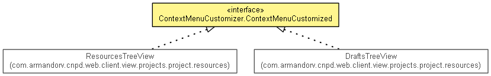

com.armandorv.cnpd.web.client.view.projects.project.resources.menu
Interface ContextMenuCustomizer.ContextMenuCustomized
- All Known Implementing Classes:
- DraftsTreeView, ResourcesTreeView
- Enclosing class:
- ContextMenuCustomizer
public static interface ContextMenuCustomizer.ContextMenuCustomized

getSelected
ResourceInfo getSelected()
enableEditableResourceMenu
void enableEditableResourceMenu()
enableShowableResourceMenu
void enableShowableResourceMenu()
enableNoEditableResourceMenu
void enableNoEditableResourceMenu()
enableMarkerContextMenu
void enableMarkerContextMenu()
enableFolderContextMenu
void enableFolderContextMenu()
disableContextMenu
void disableContextMenu()
Copyright © 2012 JBoss, a division of Red Hat. All Rights Reserved.